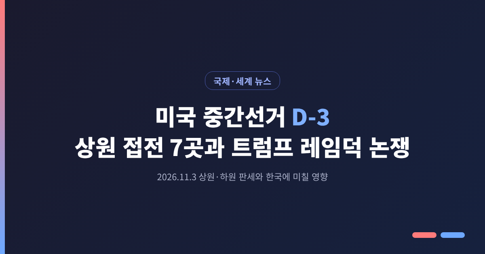
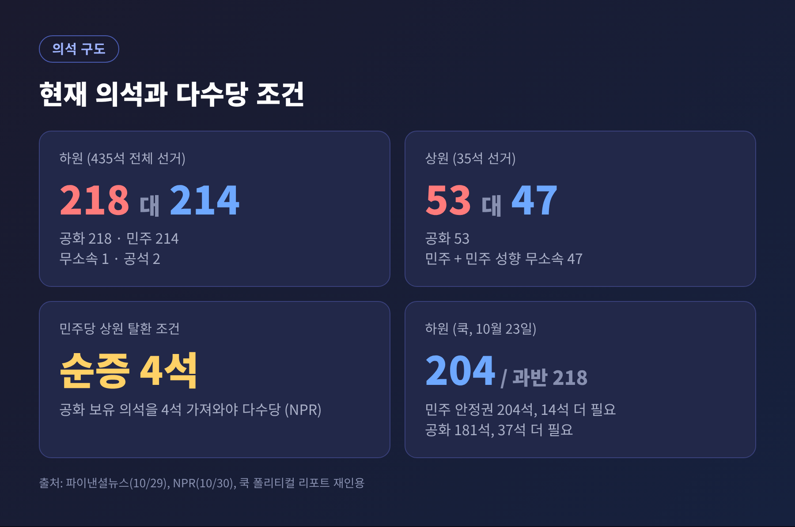
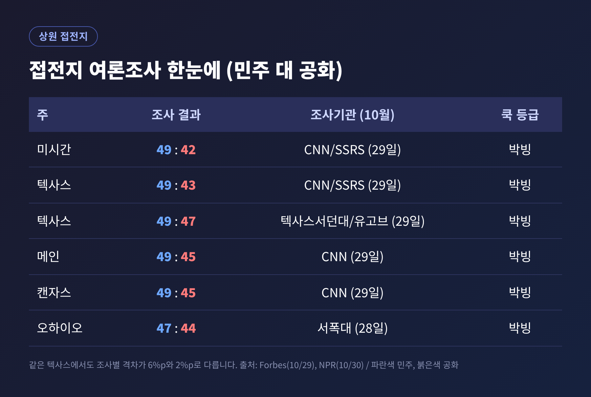
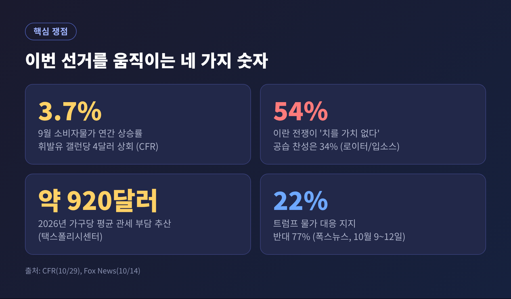
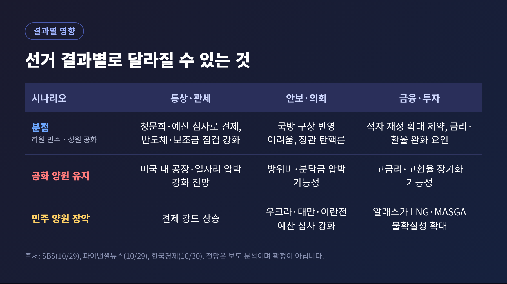
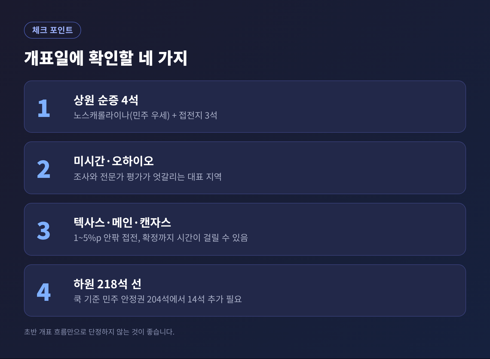

3줄 요약
이번 글에서는 미국 중간선거를 사흘 앞두고 상원·하원 판세를 정리해 보겠습니다. 접전 지역 여론조사와 트럼프 레임덕 논쟁, 결과별로 달라질 한국과 세계의 환경까지 차례로 살펴봅니다. 수치는 모두 조사기관과 시점을 함께 적었습니다.
이번 선거에서는 하원 435석 전체와 상원 100석 중 35석, 36개 주 주지사를 뽑습니다.
현재 하원은 공화당 218석, 민주당 214석입니다. 무소속 1석과 공석 2석이 있습니다. 상원은 공화당 53석, 민주당과 민주당 성향 무소속을 합친 47석입니다. (파이낸셜뉴스 10월 29일)

하원은 민주당 쪽으로 기운 분위기입니다. 쿡 폴리티컬 리포트는 10월 23일 기준 민주당 안정권을 204석, 과반인 218석까지 14석이 더 필요하다고 봤습니다. 공화당은 181석으로 37석이 더 필요합니다. 접전 선거구는 50곳입니다.
양당 지지도를 묻는 일반 투표 조사도 비슷한 방향입니다. 실버 불리틴 평균은 10월 27일 기준 민주 50.6%, 공화 41.7%로 8.9%포인트 차입니다. 폭스뉴스 조사(10월 9~12일, 등록 유권자 1,202명, 오차범위 ±2.5%포인트)에서는 민주 54%, 공화 45%였습니다.
상원은 사정이 다릅니다. 민주당이 다수당이 되려면 공화당 의석을 순증 4석 가져와야 합니다. (NPR 10월 30일) 그래서 시선이 접전 7곳에 쏠려 있습니다.
접전지는 미시간, 텍사스, 캔자스, 메인, 오하이오, 아이오와, 알래스카 7곳입니다. 쿡 폴리티컬 리포트는 이 7곳을 모두 '박빙(Toss Up)'으로 분류했습니다. 여기에 노스캐롤라이나는 민주 우세로 평가됩니다.
10월 29일 발표된 CNN 조사(SSRS)에서는 민주당 후보가 네 곳 모두 앞섰습니다.

다만 조사마다 결과가 다릅니다. 같은 날 나온 텍사스서던대/유고브 텍사스 조사는 탈라리코 49%, 팩스턴 47%로 격차가 2%포인트였습니다. CNN은 6%포인트입니다. 오하이오는 서폭대 조사(10월 28일)에서 셰러드 브라운(민주) 47%, 존 허스테드(공화) 44%였습니다.
전문가 평가는 조사보다 신중합니다. NPR은 쿡 등급을 인용해 미시간을 공화당의 '가장 좋은 탈환 기회'로 짚었습니다. 캔자스는 주의 성향상 민주당에 어려운 지역으로 분류했습니다. 워싱턴포스트는 7곳의 격차가 1~5%포인트라고 전했습니다. 모두 오차범위 안팎이라는 뜻입니다.
베팅 시장도 엇갈립니다. 칼시와 폴리마켓에서는 민주당의 상원 탈환 확률이 68%까지 올랐고, 포브스 예측 시장은 82%를 보였습니다. 시장 성격이 다르니 숫자를 그대로 비교하기는 어렵습니다. 확률이 높다고 결과가 정해진 것은 아닙니다.
대통령 지지율은 폭스뉴스 조사에서 36%였습니다. 이 매체 조사에서 1·2기를 통틀어 가장 낮은 수치입니다. 10월 뉴욕타임스·시에나 조사도 36%, 실버 불리틴 평균은 37%입니다. 일부 국내 보도는 '30%대 초반'으로 요약하는데, 조사별로 36~37%가 확인되는 수준입니다.
ABC방송은 순지지율이 제2차 세계대전 이후 중간선거 직전의 역대 대통령 가운데 가장 낮다고 보도했습니다. (한국경제 재인용)
PBS·NPR·마리스트 조사에서는 이번 의회 투표를 '트럼프 반대 표'로 본다는 응답이 44%였습니다. 트럼프가 변수가 아니라는 응답은 35%였습니다.
레임덕을 두고는 시각이 갈립니다.
또 한 가지 변수는 여론조사 자체입니다. 일부 분석은 2년 전 대선과 달리 올해는 민주당 지지세가 과소평가됐을 수 있다고 봅니다. 반대로 트럼프 대통령은 조사기관이 숫자를 지어낸다고 주장해 왔습니다. 어느 쪽이 맞을지는 개표가 답할 일입니다.
예전에는 중간선거가 정당 지지 성향의 대결이었다면, 이번에는 장바구니와 주유소 가격이 앞에 놓였습니다.
9월 소비자물가는 전월보다 0.6% 올라 연 3.7%를 기록했고, 휘발유가 상승분의 절반 이상을 차지했습니다. 전국 평균 휘발유 가격은 갤런당 4달러를 다시 넘었습니다. (외교협회 CFR 10월 29일)
폭스 조사에서는 트럼프 대통령의 물가 대응을 지지한다는 응답이 22%, 반대가 77%였습니다. 가계 형편이 2년 전보다 낫다는 응답은 18%에 그쳤습니다.

전쟁도 변수입니다. 미국과 이스라엘은 2026년 2월 이란에 대한 군사작전을 시작했고, 호르무즈 해협이 흔들렸습니다. 10월 중순 로이터·입소스 조사에서는 공습에 찬성한다는 응답이 34%, 전쟁이 치를 만한 가치가 없다는 응답이 54%였습니다. AP-NORC 조사에서는 10명 중 7명이 의회가 전쟁 종식을 우선해야 한다고 답했습니다.
한국경제는 이란전과 함께 우크라이나 무기 지원이 의회 감시 대상으로 떠오를 것으로 전망했습니다. 이른바 '두 전쟁'의 범위는 보도마다 표현이 다를 수 있습니다.
관세에 대해서는 연방대법원과 국제무역법원이 일부를 대통령 권한 초과로 판단한 바 있습니다. 세금정책센터는 올해 가구당 평균 약 920달러 부담을 추산했습니다. 정권이 바뀌어도 되돌리기 어렵다는 전문가 의견이 함께 소개됐습니다.
공화당의 입장도 짚어 둘 필요가 있습니다. 공화당은 상원 다수를 지켜 정책 동력을 유지하는 것을 가장 큰 목표로 삼고 있습니다. 집권 첫해 예산조정절차로 통과시킨 법안으로 예산 기반을 마련해 둔 상태이고, 일부 후보는 대통령과 거리를 두는 모습도 보입니다.
전문가 다수는 하원 민주당, 상원 공화당의 분점 정부를 가장 유력한 그림으로 봅니다. 물론 상원이 뒤집힐 가능성도 배제되지 않습니다.

분점 정부일 때
하원 민주당이 청문회와 예산 심사로 관세를 견제할 수 있습니다. 반도체와 보조금 집행 점검이 강해지고, 중소기업 보호를 위한 관세 면제 확대 논의도 예상됩니다. 한국경제는 골든돔, 황금함대 같은 국방 구상을 국방수권법에 반영하기 어려워질 수 있다고 봤습니다. 헤그세스 국방장관 탄핵론도 거론됩니다.
공화당이 양원을 지킬 때
SBS는 한국 기업에 미국 내 공장과 일자리를 더 요구하는 압박이 거세질 수 있다고 전망했습니다. 적자 재정 확대가 이어지면 고금리, 고환율 국면이 길어질 수 있다는 해석도 있습니다.
민주당이 양원을 모두 가져갈 때
지금 조사 흐름으로는 가능성이 크다고 말하기 어렵지만, 기술적으로 열려 있는 시나리오입니다. 의회의 견제는 한층 강해질 것으로 보이며, 우크라이나 무기 지원이나 대만 무기 판매 같은 사안도 의회의 심사를 더 받게 됩니다.
한국에 직접 닿는 변수는 다음과 같습니다.
한편 기회 요인도 거론됩니다. 힘이 빠진 대통령이 한국산 제품이나 비자 문제에서 유연해질 수 있다는 분석입니다. 일본식 접근이 참고 사례로 언급됩니다.
세계 쪽으로 눈을 돌리면, 쿡 폴리티컬 리포트는 민주당이 2010년 이후 처음으로 주지사 과반(26명 이상)을 차지할 수 있다고 봤습니다. 공화당이 추진해 온 선거구 재획정에는 부담이 될 수 있습니다.
개표가 시작되면 모든 곳을 볼 수는 없습니다. 몇 가지만 기억해 두시면 좋겠습니다.

정리하면 이렇습니다.
하원은 민주당이 앞서고, 상원은 접전입니다. 대통령 지지율은 낮지만 그것이 곧바로 정책의 방향 전환을 뜻하지는 않습니다. 조사는 방향을 보여줄 뿐 결과를 약속하지 않습니다.
이번 선거의 의미는 "누가 이기느냐"보다 "남은 2년의 속도가 어떻게 바뀌느냐"에 있다고 생각합니다.
개표가 끝난 뒤 한국의 협상 테이블이 어떻게 달라졌는지, 이 글의 시나리오와 견주어 보시길 권합니다.
※ 이 글은 2026년 10월 30일까지 보도된 한국경제, 파이낸셜뉴스, SBS, NPR, CNN(Forbes 재인용), Fox News, CFR, 캐나다 프레스 등의 내용을 정리한 것이며, 예측은 불확실성을 포함합니다.